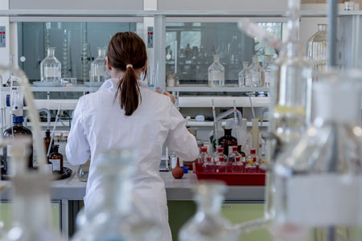

<!DOCTYPE html>
<html dir="ltr" lang="en-US">
<head>

	<meta http-equiv="content-type" content="text/html; charset=utf-8" />
	<meta name="author" content="Water and Health Laboratory" />
	<link rel="shortcut icon" href="favicon.ico" type="image/x-icon">

	<!-- Stylesheets
	============================================= -->
	<link href="https://fonts.googleapis.com/css?family=Roboto+Slab:300,400,700|Roboto:300,400,400i,700&amp;subset=greek" rel="stylesheet">
	<link rel="stylesheet" href="css/bootstrap.css" type="text/css" />
	<link rel="stylesheet" href="style.css" type="text/css" />
	<link rel="stylesheet" href="css/swiper.css" type="text/css" />
	<link rel="stylesheet" href="css/dark.css" type="text/css" />
	<link rel="stylesheet" href="css/font-icons.css" type="text/css" />
	<link rel="stylesheet" href="css/animate.css" type="text/css" />
	<link rel="stylesheet" href="css/magnific-popup.css" type="text/css" />

	<link rel="stylesheet" href="css/responsive.css" type="text/css" />
	<meta name="viewport" content="width=device-width, initial-scale=1" />

	<!-- Document Title
	============================================= -->
	<title>Water and Health Laboratory | Cyprus University of Technology</title>

</head>


<body class="stretched">

		<!-- Document Wrapper
		============================================= -->
		<div id="wrapper" class="clearfix">

			<header id="header" class="full-header">

				<div id="header-wrap">

					<div class="container clearfix">

						<div id="primary-menu-trigger"><i class="icon-reorder"></i></div>

						<!-- Logo
						============================================= -->
						<div id="logo">
							<a href="index.html" class="standard-logo" data-dark-logo="images/logo-dark.png"></a>
							<a href="index.html" class="retina-logo" data-dark-logo="images/logo-dark@2x.png"></a>
						</div><!-- #logo end -->

						<!-- Primary Navigation
						============================================= -->
						<nav id="primary-menu">

							<ul>
								<li class="current"><a href="index.html"><div>Home</div></a></li>

								<li><a href="objectives.html"><div>Objectives</div></a></li>

								<li><a href="news.html"><div>News</div></a></li>

								<li><a href="impact.html"><div>Impact</div></a>
									<ul>

											<li><a href="organiko.html"><div>Organiko Life+</div></a></li>
											<li><a href="astrasol.html"><div>Astrasol Case</div></a></li>
											<li><a href="disinur.html"><div>DISINUR</div></a></li>
										</ul>
								</li>

								<li><a href="publications.html"><div>Publications</div></a></li>

								<li><a href="members.html"><div>Members</div></a></li>

								<li><a href="projects.html"><div>Projects</div></a></li>

								<li><a href="facilities.html"><div>Facilities</div></a></li>

								<li><a href="contact.html"><div>Contact</div></a></li>

							</ul>

						</nav><!-- #primary-menu end -->

					</div>

				</div>

			</header><!-- #header end -->


			<section id="slider" class="slider-element slider-parallax swiper_wrapper full-screen clearfix" data-autoplay="5000" data-speed="550" data-loop="true">

				<div class="slider-parallax-inner">

					<div class="swiper-container swiper-parent">
						<div class="swiper-wrapper">
								<div class="swiper-slide dark" style="background-image: url('images/swiper/header-1.jpg');">
									<div class="container clearfix">
										<div class="slider-caption slider-caption-center">
											<h2 data-animate="fadeInUp" class="bottommargin-sm" data-delay="100">Water and Health Lab Promo Video</h2>
											<a href="https://www.youtube.com/watch?v=r2DujmQ56Ew&feature=youtu.be" class="button button-border button-rounded button-white button-light button-large noleftmargin nobottommargin" data-animate="fadeInUp" data-delay="200" target="_blank">Watch Video</a>

										</div>
									</div>
								</div>

							<div class="swiper-slide dark" style="background-image: url('images/swiper/header-2.jpg');">
								<div class="container clearfix">
									<div class="slider-caption slider-caption-center">
										<h2 data-animate="fadeInUp">Water and Health Lab</h2>
										<p class="d-none d-sm-block bottommargin-sm" data-animate="fadeInUp" data-delay="100">Applying the Human Exposome</p>
											<a href="objectives.html" class="button button-border button-rounded button-white button-light button-large noleftmargin nobottommargin" data-animate="fadeInUp" data-delay="200">Objectives</a>

									</div>
								</div>
							</div>
							<div class="swiper-slide dark" style="background-image: url('images/swiper/header-3.jpg');">
								<div class="container clearfix">
									<div class="slider-caption slider-caption-center">
										<h2 data-animate="fadeInUp">Water and Health Lab</h2>
										<p class="d-none d-sm-block" data-animate="fadeInUp" data-delay="100"><span>Cyprus International Institute <br> for Environmental and Public Health</p>
											<a href="impact.html" class="button button-border button-rounded button-white button-light button-large noleftmargin nobottommargin topmargin-sm" data-animate="fadeInUp" data-delay="200">Impact</a>

									</div>
								</div>
							</div>

							<div class="swiper-slide dark" style="background-image: url('images/swiper/header-4.jpg');">
								<div class="container clearfix">
									<div class="slider-caption slider-caption-center">
										<h2 data-animate="fadeInUp">Organiko Project</h2>
										<p class="d-none d-sm-block bottommargin-sm" data-animate="fadeInUp" data-delay="100">Research with Impact</p>
										<a href="https://www.youtube.com/watch?v=Kg9gBZiLG0I" class="button button-border button-rounded button-white button-light button-large noleftmargin nobottommargin" data-animate="fadeInUp" data-delay="200" target="_blank">Watch Video</a>
									</div>
								</div>
							</div>
						</div>
						<div class="slider-arrow-left"><i class="icon-angle-left"></i></div>
						<div class="slider-arrow-right"><i class="icon-angle-right"></i></div>
						<div class="slide-number"><div class="slide-number-current"></div><span>/</span><div class="slide-number-total"></div></div>
						<div class="swiper-pagination"></div>
					</div>

				</div>

			</section>

			<!-- Page Title
		============================================= -->
		<section id="page-title">

			<div class="container clearfix topmargin">
				<h1>What We Do</h1>

			</div>

		</section><!-- #page-title end -->

			<!-- Content
			============================================= -->
			<section id="content">

				<div class="content-wrap">
					<div class="container clearfix">


					<div class="col_half">
						<div class="feature-box  fbox-dark fbox-effect">
						<div class="fbox-icon">
									<a href="#"><i class="icon-line2-drop i-alt"></i></a>
						</div>
						<h3>Human biomonitoring <br>and Metabolomics protocols</h3>
						<p>Developing and applying novel human biomonitoring for biomarkers of exposure/effect and implementing agnostic metabolomics protocols.</p>
					</div>
				</div>

					<div class="col_half col_last">
						<div class="feature-box  fbox-dark fbox-effect">
							<div class="fbox-icon">
								<a href="#"><i class="icon-line2-drop i-alt"></i></a>
							</div>
							<h3>Population Health Studies</h3>
							<p>Designing population health studies and executing them in the field</p>
						</div>
					</div>


					<div class="clear"></div>


						<div class="col_half">
								<div class="feature-box  fbox-dark fbox-effect">
									<div class="fbox-icon">
										<a href="#"><i class="icon-line2-drop i-alt"></i></a>
									</div>
									<h3>Population Health Data</h3>
								<p>Processing and analyzing population health data.</p>
								</div>
						</div>

						<div class="col_half col_last">
							<div class="feature-box fbox-dark fbox-effect">
								<div class="fbox-icon">
									<a href="#"><i class="icon-line2-drop i-alt"></i></a>

								</div>

								<h3>Public Awareness</h3>
								<p>Communicating and disseminating health risks to the public and policy makers.</p>


							</div>
						</div>


				</div>


                    <div class="clear"></div>


                    <div class="container clearfix bottommargin topmargin" style="margin-bottom:100px !important;">


						<div class="col_two_fifth  nobottommargin ">
							
					</div>
                            <div class="col_three_fifth  col_last">

                                <div class="heading-block">
                                    <h3>HOW WE DO IT</h3>
                                    <span>The Water and Health Lab research agenda is built upon the framework of the human exposome, i.e., the totality of all environmental exposures occurring in one’s lifetime.
										</span>
                                </div>

                                <p>The W&H Lab team has recently joined the concept of the urban exposome, i.e., the continuous spatiotemporal surveillance/monitoring of quantitative and qualitative indicators associated with the urban external and internal domains that shape up the quality of life and the health of urban populations, using small city areas, i.e. neighborhoods, quarters, or smaller administrative districts, as the point of reference.</p>

                            </div>


                    </div>

					<div class="clear"></div>


					<div class="container clearfix bottommargin topmargin" style="margin-bottom:100px !important; margin-top:100px !important;">

						<div class="col_three_fifth nobottommargin">

							<div class="heading-block">
								<h3>History of the Lab</h3>
								<span> </span>


							</div>

							<p>
								The W&H lab was established in 2008 and took its name, because of a strategic focus of the CII on water and health issues that were historically present for the island. However, over the years, it became evident that the environmental determinants of chronic disease may be found in multiple compartments, such as in both drinking-water, and showering water, food, air, dust, or soil, etc. Thus, the comprehensive characterization of environmental exposures towards the improved understanding of the chronic disease process require the integration of all involved sources and pathways in contact with the human being. Oral ingestion of water is not the sole route of exposure to chemical or microbiological stressors that impact human health. For example, inhalation and dermal uptake are important routes of exposure to water contaminants via a suite of common water use activities (i.e. cooking, showering, cleaning, etc).


								</p>

						</div>
						<div class="col_two_fifth   col_last">
							
					</div>


						</div>
						<div class="clear"></div>

						<div class="container clearfix bottommargin topmargin" style="margin-bottom:100px !important;">

                            <div class="col_two_fifth  nobottommargin ">
									
                            </div>

                            <div class="col_three_fifth  col_last">

                                <div class="heading-block">
                                    <h3></h3>
                                    <span>The W&H Lab team holds two unique characteristics:
										</span>
                                </div>

                                <p>i) being capable of generating its own biomarker data using state of the art instrumentation available in its analytic facilities </p>
								<p>ii) in-house processing and analyzing own-generated population health data. The scientific hypotheses are tested generating either observational or experimental human datasets that are designed and executed by the Water and Health Lab team along with its strategic partners from CII and from other academic institutions in Europe and in the USA. </p>

                            </div>


                    </div>


							<!-- Impact Section
				============================================= -->


				<div class="section parallax noborder dark" style="background-image: url('images/research_index.jpg'); height: 350px; padding: 120px 0; " data-bottom-top="background-position:0px 350px;" data-top-bottom="background-position:0px -350px;">

					<div class="vertical-middle center" style="z-index: 2;">
						<div class="container clearfix" data-animate="fadeInUp">
							<div class="heading-block nobottomborder nobottommargin">
								<h2 style="font-size: 42px; ">Research with Impact</h2>
							</div>
							<a href="impact.html" class="button button-border button-rounded button-white button-light button-large noleftmargin nobottommargin" style="margin-top: 40px;">Read More</a>
						</div>
					</div>
			</div>


						<div class="container clearfix">

								<div class="heading-block">
									<h2>Latest News</h2>
								</div>

							</div>


					<div class="container clearfix">
							<div id="posts" class="post-grid grid-container grid-3 clearfix" data-layout="fitRows">

								<div class="entry clearfix">
									<div class="entry-image">
										<a href="news-diurnal-variation-in-biomarkers-of-exposure-to-endocrine-disrupting-chemicals-and-their-association-with-oxidative-damage-in-norwegian-adults-the-euromix-study.html"></a>
									</div>
									<div class="entry-title">
										<h2><a href="news-diurnal-variation-in-biomarkers-of-exposure-to-endocrine-disrupting-chemicals-and-their-association-with-oxidative-damage-in-norwegian-adults-the-euromix-study.html">Diurnal Variation in Biomarkers of Exposure to Endocrine-Disrupting Chemicals and Their Association with Oxidative Damage in Norwegian Adults: The EuroMix Study</a></h2>
										<h5 style="font-weight:100; margin-top:5px;" class="uppercase" >- May 5, 2022</h5>
									</div>
									<div class="entry-content">
										<p>Are there unique chrono-windows of metabolism in....
										<a href="news-diurnal-variation-in-biomarkers-of-exposure-to-endocrine-disrupting-chemicals-and-their-association-with-oxidative-damage-in-norwegian-adults-the-euromix-study.html"class="more-link">Read More</a></p>
									</div>
								</div>
		
								<div class="entry clearfix">
									<div class="entry-image">
										<a href="news-oxidative-stress-of-glyphosate-ampa-and-metabolites-of-pyrethroids-and-chlorpyrifos-pesticides-among-primary-school-children-in-cyprus.html"></a>
									</div>
									<div class="entry-title">
										<h2><a href="news-oxidative-stress-of-glyphosate-ampa-and-metabolites-of-pyrethroids-and-chlorpyrifos-pesticides-among-primary-school-children-in-cyprus.html">Oxidative stress of glyphosate, AMPA and metabolites of pyrethroids and chlorpyrifos pesticides among primary school children in Cyprus</a></h2>
										<h5 style="font-weight:100; margin-top:5px;" class="uppercase" >- May 5, 2022</h5>
									</div>
									<div class="entry-content">
										<p>This was a pesticide-focused children's study in Cyprus aligned with the methodology and tools used in the HBM4EU project....
										<a href="news-oxidative-stress-of-glyphosate-ampa-and-metabolites-of-pyrethroids-and-chlorpyrifos-pesticides-among-primary-school-children-in-cyprus.html"class="more-link">Read More</a></p>
									</div>
								</div>
		
								
								<div class="entry clearfix">
									<div class="entry-image">
										<a href="news-press-release-on-wh-website-news.html"></a>
									</div>
									<div class="entry-title">
										<h2><a href="news-press-release-on-wh-website-news.html">Assessment of indoor and outdoor air quality in primary schools of Cyprus during the COVID–19 pandemic measures in May–July 2021</a></h2>
										<h5 style="font-weight:100; margin-top:5px;" class="uppercase" >- May 1, 2022</h5>
									</div>
									<div class="entry-content">
										<p>Our team along with two innovation companies (LELANTUS and PHOEBE) and the Department of Electrical Engineering of CUT published the results of a school population representative....
										<a href="news-press-release-on-wh-website-news.html"class="more-link">Read More</a></p>
									</div>
								</div>


								<div><a href="news.html"class="more-link">Read More News</a></div>

							</div>
					</div>


					<div class="clear"></div>

<!--
					<div class="container clearfix bottommargin topmargin" style="margin-bottom:100px !important;">


                            <div class="col_three_fifth  ">

                                <div class="heading-block">
                                    <h3></h3>
                                    <span>History of the Lab
										</span>
								</div>

								<p>The W&H lab was established in 2008 and took its name, because of a strategic focus of the CII on water and health issues that were historically present for the island. However, over the years, it became evident that the environmental determinants of chronic disease may be found in multiple compartments, such as in both drinking-water, and showering water, food, air, dust, or soil, etc. Thus, the comprehensive characterization of environmental exposures towards the improved understanding of the chronic disease process require the integration of all involved sources and pathways in contact with the human being. Oral ingestion of water is not the sole route of exposure to chemical or microbiological stressors that impact human health. For example, inhalation and dermal uptake are important routes of exposure to water contaminants via a suite of common water use activities (i.e. cooking, showering, cleaning, etc).</p>
							</div>

							<div class="col_two_fifth  nobottommargin col_last">
									
                            </div>


                    </div>

					<div class="clear"></div>-->


€ 


				</div>


			</section><!-- #content end -->

						<!-- Footer
			============================================= -->
			<footer id="footer" class="dark notopmargin">

					<div class="container">

						<!-- Footer Widgets
						============================================= -->
						<div class="footer-widgets-wrap clearfix">

							<div class="col_two_third">

								<div class="col_two_third">

									<div class="widget clearfix">

										


										<p>The<strong> Water & Health Laboratory</strong> is part of the Cyprus International Institute for Environmental and Public Health and its main goal is the study of health risk associated with chronic exposures to environmental chemicals with particular focus on the application of novel exposure assessment methodologies.</p>

										<ul style="list-style-type: none">
											<li><a href="index.html">home</a> / <a href="objectives.html">objectives</a> / <a href="news.html">news</a></li>
											<li><a href="impact.html">impact</a> / <a href="publications.html">publications</a> / <a href="members.html">members</a></li>
											<li><a href="projects.html">projects</a> / <a href="facilities.html">facilities</a> / <a href="contact.html"> contact</a></li>
										</ul>
									</div>
								</div>

								<div class="col_one_third col_last">

								</div>

							</div>


							<div class="col_one_third col_last">

								<div class="widget clearfix">
									<h4>Contact Us</h4>
									<div>
										<address>
											<strong>Address</strong><br>
											<a href="https://goo.gl/maps/2851xesCNVL2">	Irinis 95, 3041<br>
											Limassol, Cyprus<br></a>
										</address>
										<strong>Phone:</strong> (+357) 25002398<br>
										<strong>Email:</strong> <a href="mailto:waterandhealthlab@cut.ac.cy"> waterandhealthlab@cut.ac.cy </a>
									</div>

								</div>


								<div class="widget clearfix" style="margin-bottom: -20px;">

										<div class="row">

												<div class="col-lg-6 clearfix bottommargin-sm">
													<a href="https://www.facebook.com/waterandhealthlab.CII" target="_blank" class="social-icon si-dark si-colored si-facebook nobottommargin" style="margin-right: 10px;">
														<i class="icon-facebook"></i>
														<i class="icon-facebook"></i>
													</a>
													<a href="https://www.facebook.com/waterandhealthlab.CII" target="_blank"><small style="display: block; margin-top: 3px;"><strong>Like us</strong><br>on Facebook</small></a>
												</div>
												<div class="col-lg-6 clearfix">
													<a target="_blank" href="https://twitter.com/waterhealth_lab" class="social-icon si-dark si-colored si-twitter nobottommargin" style="margin-right: 10px;">
														<i class="icon-twitter"></i>
														<i class="icon-twitter"></i>
													</a>
													<a target="_blank" href="https://twitter.com/waterhealth_lab"><small style="display: block; margin-top: 3px;"><strong>Follow us</strong><br>on Twitter</small></a>
												</div>
												<div class="col-lg-6 clearfix bottommargin-sm">
													<a href="https://www.linkedin.com/company/14828661/admin/" target="_blank" class="social-icon si-dark si-colored si-linkedin nobottommargin" style="margin-right: 10px;">
														<i class="icon-linkedin"></i>
														<i class="icon-linkedin"></i>
													</a>
													<a href="https://www.linkedin.com/company/14828661/admin/" target="_blank"><small style="display: block; margin-top: 3px;"><strong>Follow us</strong><br>on LinkedIn</small></a>
												</div>
												<div class="col-lg-6 clearfix">
													<a target="_blank" href="https://www.instagram.com/waterandhealthlab/" class="social-icon si-dark si-colored si-instagram nobottommargin" style="margin-right: 10px;">
														<i class="icon-instagram"></i>
														<i class="icon-instagram"></i>
													</a>
													<a target="_blank" href="https://www.instagram.com/waterandhealthlab/"><small style="display: block; margin-top: 3px;"><strong>Follow us</strong><br>on Instagram</small></a>
												</div>

								</div>

							</div>

						</div></div><!--ooter-widgets-wrap end -->

					</div>

					<!-- Copyrights
					============================================= -->
					<div id="copyrights">

						<div class="container center clearfix thinkpositive">

								Copyright &copy; <script>document.write(new Date().getFullYear())</script> All Rights Reserved.
								<br>
								Developed by <a href="https://thinkpozitive.net" target="_blank"> Think Positive New Media </a> | <a href="https://thinkpozitive.net" target="_blank"> </a>


						</div>

					</div><!-- #copyrights end -->

				</footer><!-- #footer end -->

		</div><!-- #wrapper end -->

		<!-- Go To Top
		============================================= -->
		<div id="gotoTop" class="icon-angle-up"></div>

		<!-- External JavaScripts
		============================================= -->
		<script src="js/jquery.js"></script>
		<script src="js/plugins.js"></script>

		<!-- Footer Scripts
		============================================= -->
		<script src="js/functions.js"></script>

	</body>

	</html>
